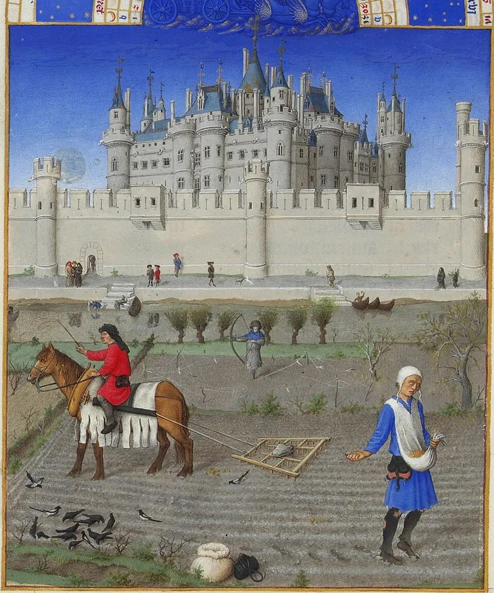
12345Font 1 · Germans Limbourg, Les Très Riches Heures du duc de Berry, octubre (c. 1412–1416).
| # | Què hi veig? | Què en dedueixo? |
|---|---|---|
| 1 | ||
| 2 | ||
| 3 | ||
| 4 | ||
| 5 |
Escriu a cada graó què dona aquest grup i què rep. Fes servir el banc de paraules.
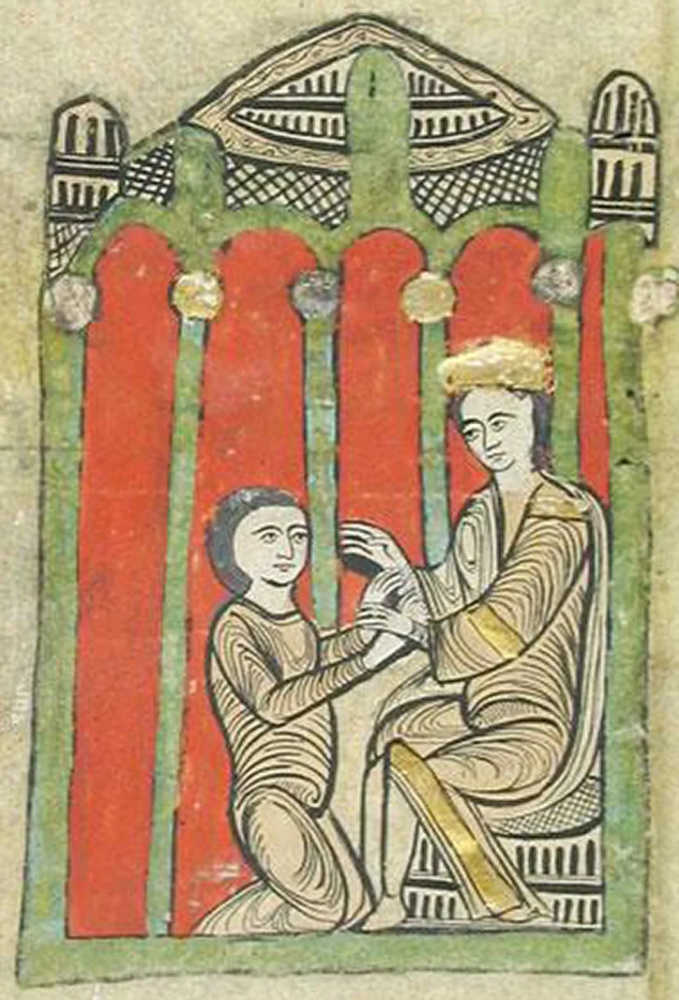
123Font 2 · Liber feudorum maior (c. 1192).
Sota cada imatge, escriu quina feina fan i en quina època de l'any.
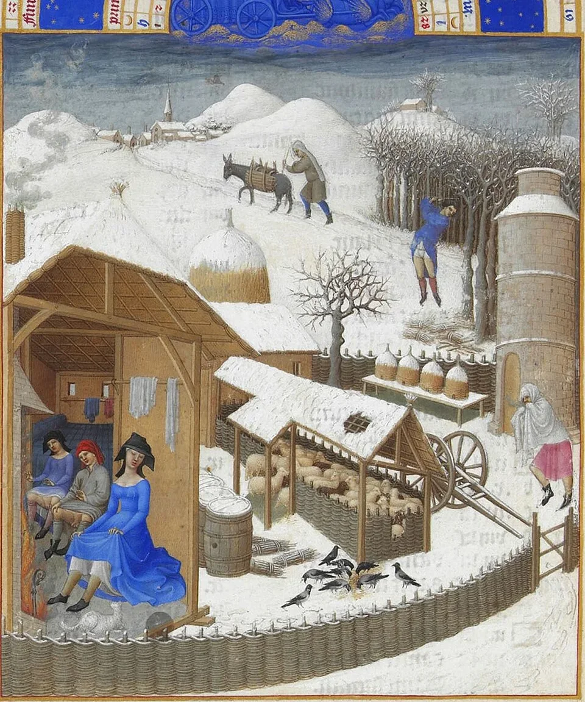
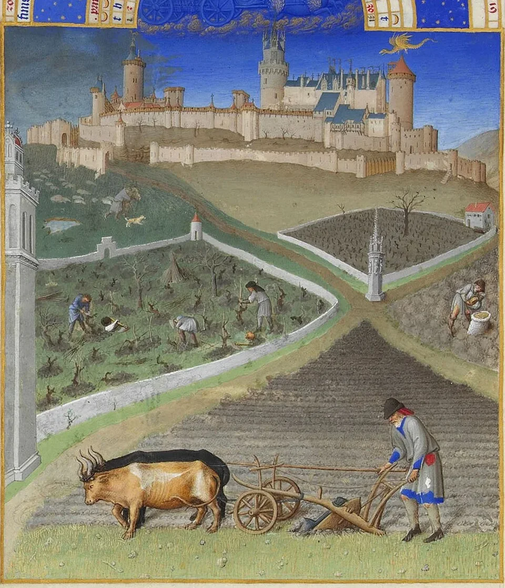
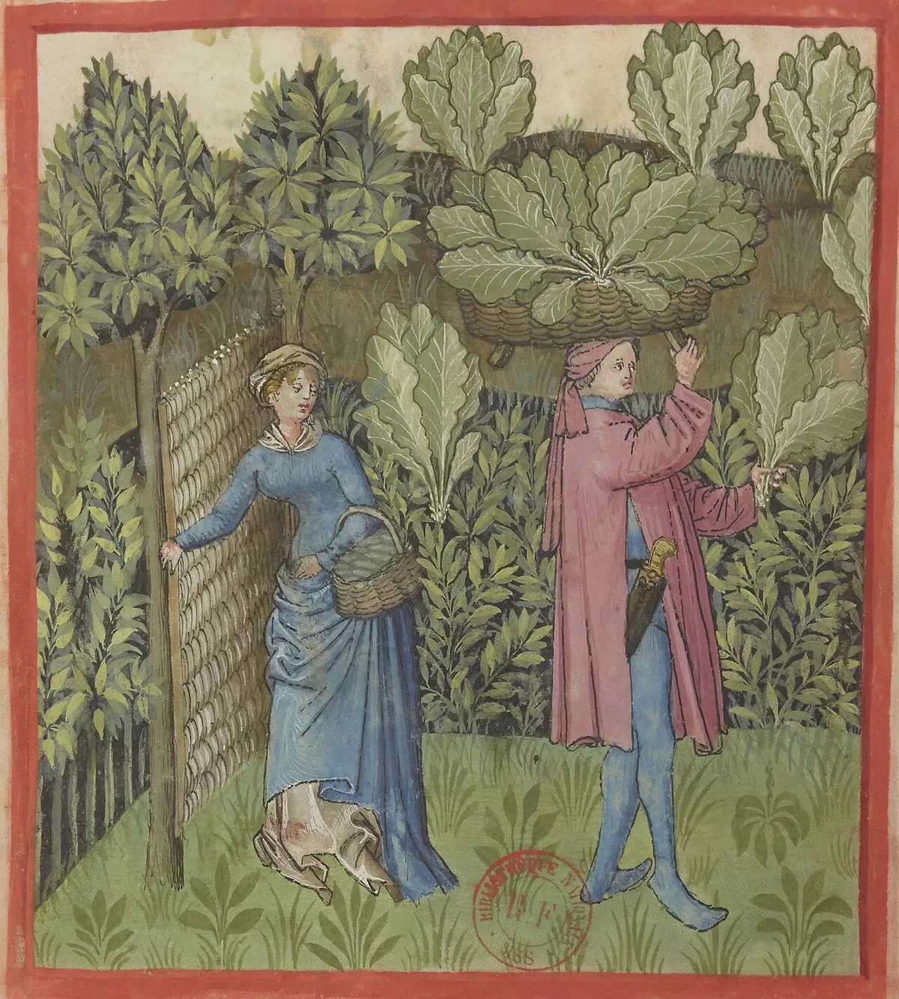
Una família recull 10 sacs de blat. Pinta amb colors diferents: 1 per al delme de l'Església, 3 de rendes per al senyor i 2 per sembrar l'any vinent. Són xifres d'exemple per pensar, no dades d'un mas concret.
A més de pagar, molts pagesos catalans (els remences) estaven lligats al mas i havien de pagar el senyor en aquests casos:
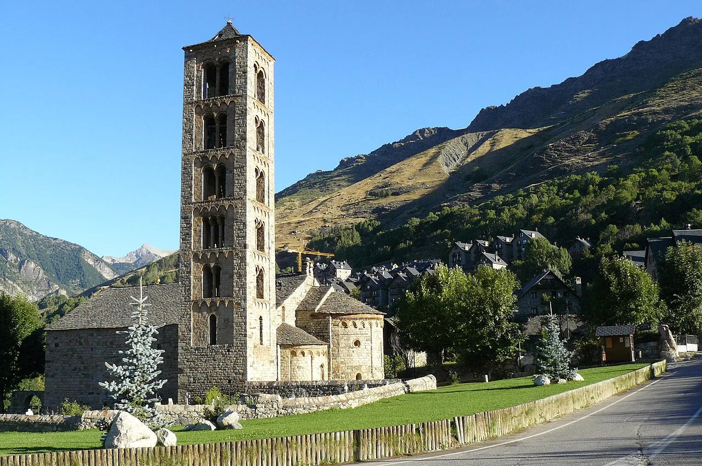
1123Es consagra Sant Climent de Taüll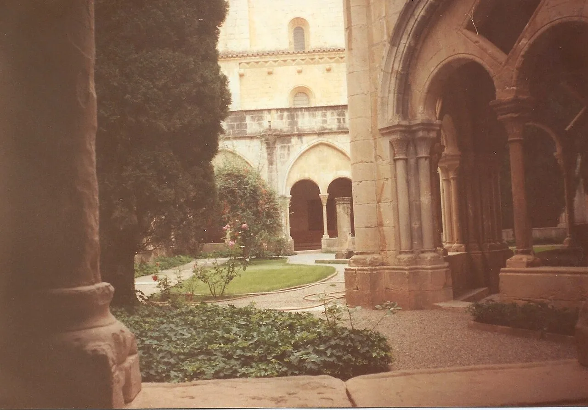
1151Es funda el monestir de Poblet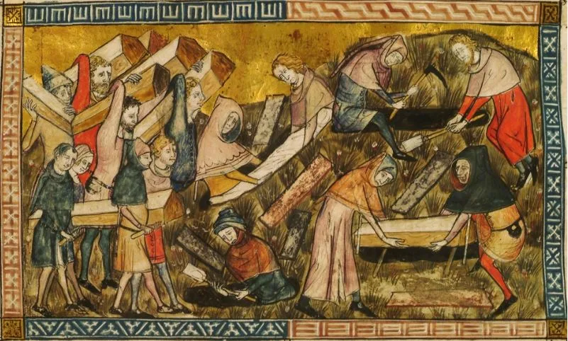
1348Arriba la Pesta Negra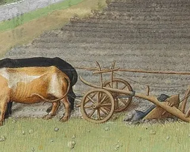
1462Comença la guerra dels remences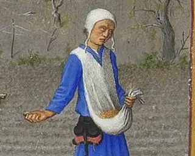
1486Sentència de GuadalupePregunta: Per què els pagesos obeïen el senyor feudal? Respon amb una afirmació, una prova d'una font de la fitxa (1, 2 o 3) i el teu raonament. Tens la guia de raonament al costat.
Font 1 · Les Très Riches Heures du duc de Berry, octubre.
Escriu el número al costat de la paraula.
| el castell del senyor | |
| la muralla | |
| un pagès que llaura amb el cavall | |
| un pagès que sembra |
Completa amb les paraules del banc. El primer graó ja està fet.
El vassall posa les mans entre les del senyor. Què vol dir? Marca'n una.
Que es barallen.Que el vassall promet ser fidel al senyor.Que el senyor li ven una cosa.Escriu sota cada imatge la feina: llaurar, sembrar, collir o escalfar-se a casa.
La família té 10 sacs de blat. Fes-ho pas a pas:
Són xifres d'exemple per pensar.
| Frase | Cert | Fals |
|---|---|---|
| Abans de 1486, els pagesos podien marxar quan volien. | ||
| Després de 1486, els pagesos podien deixar el mas. | ||
| Qui va decidir el canvi va ser el rei. |
Què va passar primer? Marca-ho.
La Pesta Negra (1348)Els pagesos poden marxar del mas (1486)Pregunta: Per què els pagesos obeïen el senyor? Completa les tres parts.
Font 1 · Germans Limbourg, Les Très Riches Heures, octubre (c. 1412–1416). Llibre d'hores encarregat pel duc de Berry.
| # | Observo | Dedueixo |
|---|---|---|
| 1 | ||
| 2 | ||
| 3 |
Escriu a cada graó què dona i què rep el grup, sense banc de paraules. Després respon la pregunta de sota.
D'una collita de 10 sacs, 1 va al delme, 3 al senyor i 2 són llavor (xifres d'exemple). Pinta-ho i calcula quin percentatge li queda a la família per menjar: %
Pregunta: Per què els pagesos obeïen el senyor feudal, i fins a quin punt ho acceptaven?
Llegeix la paraula en veu alta. Escriu-la a la teva llengua a l'última columna.
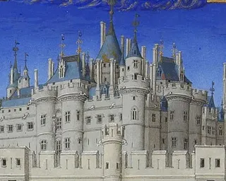
1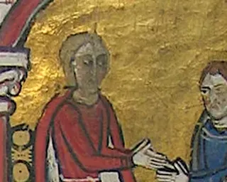
2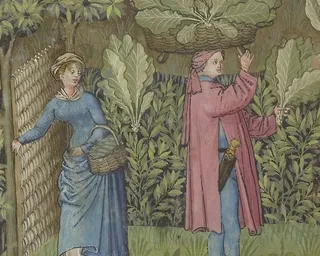
4Escriu les paraules a la casella correcta: senyor · pagès · cavaller · pagesa · llaurar · sembrar · manar · protegir.